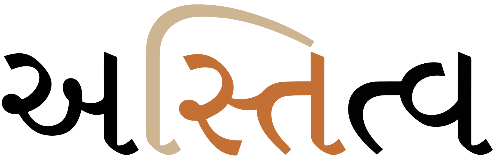
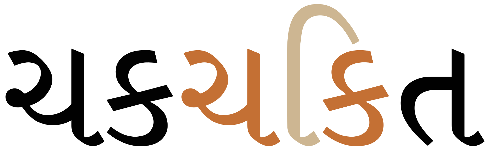

This page brings together basic information about the Gujarati script and its use for the Gujarati language. It aims to provide a brief, descriptive summary of the modern, printed orthography and typographic features, and to advise how to write Gujarati using Unicode.
Select part of this sample text to show a list of characters, with links to more details.
Change size: 28px
અનુચ્છેદ ૧:
પ્રતિષ્ઠા અને અધિકારોની દૃષ્ટિએ સર્વ માનવો જન્મથી સ્વતંત્ર અને સમાન હોય છે. તેમનામાં વિચારશક્તિ અને અંતઃકરણ હોય છે અને તેમણે પરસ્પર બંધુત્વની ભાવનાથી વર્તવું જોઇએ.
અનુચ્છેદ ૨:
દરેક વ્યક્તિને જાતિ, રંગ, લિંગ, ભાષા, ધર્મે, રાજકીય અથવા બીજા અભિપ્રાય, રાષ્ટ્રીય અથવા સામાજિક ઉદ્ભવસ્થાન, મિલકત, જન્મ અથવા મોભા જેવા કોઇપણ જાતના ભેદભાવ વગર આ ધોષણામાં રજૂ કરવામાં આવેલા સધળા અધિકારો અને સ્વતંત્રતા ભોગવવાનો હક્ક છે.
વધુમાં કોઇપણ વ્યક્તિ તે સ્વતંત્ર, ટ્રસ્ટ હેઠળના સ્વશાસન હેઠળ ન હોય તેવા અથવા સાર્વભામત્વની બીજી કોઇપણ મર્યાદા હેઠળ આવેલા દેશ અથવા પ્રદેશની હોય તો પણ રાજકીય, હફમવવિષયક અથવા આંતરરાષ્ટ્રીય મોભાના ધોરણે તેની સાથે કોઇપણ ભેદભાવ રાખવામાં આવશે નહિ.
The Gujarati script is used for writing the Gujarati and Chodri languages, together spoken by almost 47 million people, as well as use alongside Devanagari for languages of the Bhil people, one of India's largest indigenous groups. Until the mid-19th century it was used primarily for bookkeeping and personal correspondence, but since printing facilities became widely available to Gujarati speakers the script has been used in schools, for printing books and newspapers, in government offices and public signage, and is one of the official scripts of India.
ગુજરાતી લિપિgujǎrātī lipiGujarati script
The Gujarati script was adapted from the Devanagari script to write the Gujarati language from the 10th century. Since then it has gone through 3 distinct phases. The third phase, begun in the 17th century, saw the abandonment of the shiroreka (topline), part of an adaptation to enable ease and speed of writing. The Devanagari script was used for literature and academic writings until the modern widespread use of the script developed.
The script is an abugida. Consonants carry an inherent vowel which can be modified by appending vowel signs to the consonant. See the table to the right for a brief overview of features of the modern Gujarati orthography.
Gujarati text runs left to right in horizontal lines.
Words are separated by spaces. There is no uppercase and lowercase distinction.
Gujarati uses 34 consonant letters. The repertoire can be extended by applying the nukta diacritic to characters, or with additional characters, but these are used for Arabic and Avestan transliterations, rather than current Gujarati text. Gujarati doesn't use a shiroreka (top line) like its close relative Devanagari.
Final consonant sounds may be represented by 2 dedicated combining marks (anusvara & visarga), but are generally ordinary consonants that are not marked by a virama.
Consonant clusters can be indicated using the virama between consonants and include half-forms, stacked consonants, and ligated glyphs. Occasionally, a visible virama is used. In addition, participating consonants may just be moved together. Gujarati is also unusual in that components in clusters sometimes used Devanagari glyphs for one or more Gujarati characters.
The Gujarati orthography is an abugida with one inherent vowel (ə). Other post-consonant vowels are written using 11 vowel signs, all combining marks, and only one per consonant.
There are separate vowel signs for the historical short and long variants, but length is no longer distinctive in modern pronunciation. It is only found in metrical structures of verse.ws,#Overview
Standalone vowels are written using 12 independent vowels, one for each vowel sound, including the inherent vowel. Some vowel signs can be visually analysed into subcomponents, but Unicode usage involves only one combining character per consonant.
Vowels may be nasalised, using the anusvara diacritic.
The absence of the inherent vowel is not always indicated. It is generally not pronounced at the end of a word, but also it is sometimes elided without indications within a word.
Two vocalics are used in current text. Others were used historically.
Gujarati has a set of native digits. Punctuation includes mostly ASCII but may also include dandas.
The following table summarises the main vowel to character assigments.
ⓘ represents the inherent vowel. Dependent vowels appear on the left; standalone vowels on the right.
Simple:
િ␣ી␣ ␣ુ␣ૂ
ઇ␣ઈ␣ ␣ઊ␣ઉ
ે␣ ␣ો
એ␣ ␣ઓ
ⓘ
અ
ૉ
ઑ
ૅ␣ા
ઍ␣ ␣આ
Diphthongs:
ૈ␣ૌ
ઔ␣ ␣ઐ
Inherent vowel
ક
kəU+0A95 GUJARATI LETTER KA
ə following a consonant is not written, but is seen as an inherent part of the consonant letter, so kə is written by simply using the consonant letter. The sound is transcribed as a.
Combining marks used for vowels
કી
kiU+0A95 GUJARATI LETTER KA + U+0AC0 GUJARATI VOWEL SIGN II
Gujarati uses the following dedicated combining marks for vowels.
િ␣ી␣ુ␣ૂ␣ે␣ો␣ૉ␣ૅ␣ા␣ૈ␣ૌ
ૅ and ૉ are used to represent the English æ and ɔ sounds, respectively.ws,#Vowels
Six vowel signs are are spacing marks, meaning that they consume horizontal space when added to a base consonant.
An orthography that uses vowel signs is different from one that uses simple diacritics or letters for vowels in that the vowel signs are generally rendered relative to an orthographic syllable, rather than just applied to the letter of the immediately preceding consonant (see prebase for an example).
Pre-base vowel sign
કિ
kiU+0A95 GUJARATI LETTER KA + U+0ABF GUJARATI VOWEL SIGN I
One vowel sign appears to the left of the base consonant letter or cluster.
િ
This is a combining mark that is always typed and stored after the base consonant(s), ie. the codepoints follow the order in which the items are pronounced. The rendering process places the glyph before the base consonant without changing the code points. Click on the following word to see the sequence of characters in storage.
દિવસ
It is actually placed before the start of an orthographic syllable. In fig_prebase the sequence of glyphs for the orthographic syllable is rendered VCC, whereas the pronunciation is CCV. In conjuncts with 3 consonants, it will still be rendered before the consonants.

A prebase vowel, pronounced after a consonant cluster, but rendered to the left of the conjunct.show composition
અસ્તિત્વ
However, if the cluster doesn't form a conjunct, this creates two syllables and the pre-base vowel sign appears before the last consonant in the cluster. The sequence of displayed glyphs is now CVC. If the conjunct contains 3 consonants, the displayed order will be CCVC.

Another pre-base vowel, but without the conjunct. The vowel is now rendered to the left of the last consonant in the cluster.show composition
ચકચકિત
Vowel length
There are separate vowel signs for the historical short and long variants, but length is no longer distinctive in modern pronunciation. It is only found in metrical structures of verse.ws,#Overview
Nasalisation
ં nasalises the vowel in a syllable, eg. મેંme˜I
The anusvara may also represent a nasal before a plosive.
Vowel sign placement
The following list shows where vowel signs are positioned around a base consonant to produce vowels, and how many instances of that pattern there are.
1 pre-base, eg. કિki
5 post-base, eg. કાkə
3 superscript, eg. કેke
2 subscript, eg. કુku
Standalone vowels
Gujarati represents standalone vowels using a set of independent vowel letters. The set includes a character to represent the inherent vowel sound.
ઇ␣ઈ␣ઊ␣ઉ␣એ␣ઓ␣અ␣ઑ␣ઍ␣આ␣ઔ␣ઐ
Vowel absence
The inherent vowel is not always pronounced, even if there is no visual indication of its absence.
For example, the inherent vowel is typically not pronounced at the end of a word, eg. ઘર The inherent vowel is still dropped when the root word is followed by suffixes or in compounds,ws,#Overview eg. ઘરપરઘરકામ
The inherent vowel may also be elided when combining morphemes, eg. the root પકડ઼ is written the same even when inflected as પકડ઼ે even though the pronunciation is pakṛe. ws,#Overview
In other cases, the inherent vowel is simply missing, eg. વરસાદ is pronounced varsaːd.ws,#Overview
Gujarati can also use ્ (called halant in Gujarati) to explicitly kill the inherent vowel after a consonant. The virama is rarely seen. Apart from the situations just mentioned, the virama is also usually hidden when part of a consonant cluster (see clusters).
The virama is visible, however, if it isn't followed by a consonant, eg. the following explicitly represents just the sound k. ક્k͓
Vowel sounds to characters
This section maps Gujarati vowel sounds to common graphemes in the Gujarati orthography.
The left column shows dependent vowels, and the right column independent vowel letters.
Click on a grapheme to find other mentions on this page (links appear at the bottom of the page). Click on the character name to see examples and for detailed descriptions of the character(s) shown.
Plain vowels
i
ી
ચીની
ઈ
ઈરાન
ɪ
િ
ટિકિટ
ઇ
ઇયળ
u
ુ
લુપ્ત
ૂ
ભૂખ
ઉ
ઉત્તર
ઊ
ઊપર
e
ે
મેવો
એ
એકલું
o
ો
ખોખું
ઓ
ઓગસ્ટ
ə
અ
અમુક
ɛ
ે
એ
એરણ
ɔ
ૉ
કૉફી
ો
ઘડો
ઑ
ઑફિસ
ઓ
ઓળો
æ
ૅ
ઍ
ɑ
ા
શામ
આ
આંબો
Complex vowels
əj
ૈ
હૈયું
ઐ
ઐતિહાસિક
əʋ
ૌ
ચૌદ
ઔ
ઔરંગઝેબ
Nasalisation
̃
ં
આંખ
Vocalics
In Gujarati, vocalics are available both as vowel signs and independent vowels. According to CLDR, only two of the vocalics are regularly used for the Gujarati language.
ઋ␣ૠ␣ૃ␣ૄ
The other vocalics in the Gujarati block are:
ઌ␣ૡ␣ૢ␣ૣ
Consonants
Consonant summary table
The following table summarises the main consonant to character assigments.
A number of letters have allophones which are not shown here. See the following sections for details. Normal letters are used as final consonants, but we list here some additional, dedicated finals.
Onsets
પ␣બ␣ત␣દ␣ટ␣ડ␣ક␣ગ
ભ␣થ␣ધ␣ઠ␣ઢ␣ખ␣ઘ
ચ␣જ␣ ␣છ␣ઝ
ફ␣સ␣શ␣ષ␣હ
મ␣ન␣ઞ␣ણ␣ઙ
વ␣ર␣લ␣ળ␣ય
Finals
ં␣ઃ
Basic consonants
Whereas the table just above takes you from sounds to letters, the following simply lists the basic consonant letters (however, since the orthography is highly phonetic there is little difference in ordering).
The Unicode Gujarati block provides mechanisms for extending the basic set of consonants, in particular for the transcription of Arabic and Avestan.
A set of combining characters for the range 0AFA..0AFF was added to the block in Unicode v10 to allow representation of Arabic sounds. For more details, see the Unicode Standard.u,480
઼ is used to transliterate sounds in Avestan found in the texts of the Zoroastrians, who fled to Gujarat from Persia and are known as Parsis. They include the following;
ત઼␣ંઘ઼␣જ઼␣ખ઼
The Gujarati block also has an additional consonant character to represent the letter ʒ in those transliterations.
Clusters of consonant letters at the beginning of an orthographic syllable occur in Gujarati, and they are handled as described in the section clusters.
Special behaviours include handling of RA at the beginning of an orthographic syllable (see rconjuncts).
Finals
Two combining characters can follow a consonant or vowel to produce a final consonant sound in a phonetic syllable.
ં nasalises the vowel in a syllable (see nasalisation), or represents a homorganic nasal before a plosive.
ઃ is a rarely used and silent hangover from Sanskrit, representing a final h.
Consonant clusters
The absence of a vowel sound between two or more consonants can be indicated visually in the following ways.
Create a conjunct. There are a number of possibilities here:
Half-forms : Reduce the shape of all consonants in the cluster except the last to a 'half-form'.
Stacking : Reduce a non-initial consonant in size and shape and position it below the first. Sometimes the subjoined character is attached to the bottom left corner.
Touching : Move the component consonants close together, so that they touch.
Special ligation : Create a ligature combining the two shapes (where it may be difficult to identify one or more of the parts).
The letter ra has its own idiosyncratic way of combining with other consonants, whether it precedes or follows them.
Show a visible virama below the non-final consonants in the cluster.
Use a final-consonant character before another consonant. See finals.
No indication, although there are usually generalised pronunciation rules that allow readers to spot these locations. See absence.
To produce a conjunct, ્ is added between the consonants in the cluster. There are exceptions, but this type of virama is usually not displayed, eg. the sequence 0AB6 0ACD 0A9A produces
શ્ચ
The font usually determines which visual method is used, although it is possible to influence this (see joiner).
One slightly unusual aspect of Gujarati is that it sometimes borrows Devanagari glyph shapes for one or more components of a conjunct (though the characters are still the normal Gujarati ones).
Click on the figures below to see which characters are being shown.
Half-forms
A half-form is typically created by removing the vertical line in the consonant shape, where there is one. (The vertical line is associated with the inherent vowel, and around two-thirds of Gujarati consonant shapes contain one.) There is often some additional tweaking of glyphs in order to join the components neatly.
ત્વ→ત્વણ્ઢ→ણ્ઢથ્થ→થ્થ
Examples of conjuncts formed by using half-forms.
Vertical combinations
Vertical combinations are particularly common for gemination.
ટ્ટ→ટ્ટઢ્ઢ→ઢ્ઢટ્ઠ→ટ્ઠ
Examples of conjuncts formed by subjoining non-initial consonants.
Some vertical combinations hang the subjoined second consonant from the bottom-left corner.
દ્ગ→દ્ઘદ્ધ→દ્ધદ્બ→દ્બ
Examples where subjoined consonants are attached to the bottom-left corner.
Using devanagari glyph shapes
Certain clusters use devanagari shapes for one or more of the consonants participating in the conjunct. This is a reminder that conjuncts are to a large extent a legacy of Sanskrit text.
હ્ય→હ્યઞ્જ→ઞ્જદ્બ→દ્બઙ્ક→ઙ્ક
Examples where part(s) of the conjunct use a Devanagari shape.
Ligated conjuncts
Other clusters combine components into special ligated forms, often in a way that makes it difficult to spot the component parts.
ત્ત→ત્તદ્પ→દ્યશ્ચ→શ્ચક્ષ→ક્ષ
Conjuncts formed by ligation.
Touching consonants in conjuncts
Other clusters, particularly where there is no vertical stroke in the preceding consonant, move the components closer together, without major shape changes, so that they touch.
ક્ક→ક્કક્ય→ક્યજ્જ→જ્જ
Consonants in a cluster that touch each other without substantial shape changes.
Conjuncts with ra
After a consonant.When ra follows another consonant, it is typically rendered as a small, diagonal line pointing downwards to the left, eg. ક્ર ગ્ર ભ્ર હ્ર શ્ર After 5 consonants, however, it is rendered as an upside-down v shape below, ie. ટ્ર ઠ્ર ડ્ર ઢ્ર દ્ર After ત it produces ત્ર
ગ્ર→ગ્રટ્ર→ટ્રત્ર→ત્ર
Conjuncts formed by a following ra.
Before a consonant.When ra precedes another consonant, it is rendered as a small hook above the following consonant, or a following vertical line in the cluster, eg. ર્કr͓kર્સr͓s Where it precedes a cluster, it is aligned with the vertical line of the trailing consonant, eg. ર્સ્પr͓s͓p However, if there is a spacing vowel sign with a vertical line to the right of the cluster, it aligns with that, eg. ર્કાr͓kəર્કીr͓kī (This illustrates that the basic units of the script are orthographic syllables.)
ર્કર્વાર્સ્પર્સ્પા
Examples of positioning of the hook for conjuncts formed by a preceding ra.
Visible virama
The ability to form conjuncts depends on the richness of the font. Where a font is not able to produce a half-form or ligature, etc., it will leave a visible virama glyph below the initial consonant(s) to indicate the missing vowel sound, eg. ટ્બʈ͓b
Consonant sounds to characters
This section maps Gujarati consonant sounds to common graphemes in the Gujarati orthography.
Click on a grapheme to find other mentions on this page (links appear at the bottom of the page). Click on the character name to see examples and for detailed descriptions of the character(s) shown.
p
પ
પપૈયું
b
બ
બંબો
bʰ
ભ
ભાભી
t
ત
તબિયત
tʰ
થ
થડ
t͡ʃ
ચ
ચમચી
t͡ʃʰ
છ
છત્રી
d
દ
દાદરો
dʰ
ધ
ધૂય
d͡ʒ
જ
જ્યોતિષ
d͡ʒʰ
ઝ
ઝાડ
ʈ
ટ
ટિકિટ
ʈʰ
ઠ
ઠઠ્ઠો
ɖ
ડ
ડગલો
ɖʰ
ઢ
ઢાંકણ
k
ક
કલાકાર
kʰ
ખ
ખોખું
kʃ
ક્ષ
ક્ષત્રિય
ɡ
ગ
ગંગા
ɡʰ
ઘ
ઘેટું
ɡn
જ્ઞ
જ્ઞાન
f
ફ
ફજર
s
સ
સંસ્કૃતિ
ʃ
શ
શિશુ
ષ
વૈષ્ણવ
ɦ
હ
હજી
m
મ
મમમમ
n
ન
નબી
ɲ
ઞ
ɳ
ણ
ઠાણ
ŋ
ઙ
w
વ
ʋ
વ
વડવાગળું
r
ર
રક્ષા
ru
ૃ
સંસ્કૃતિ
ઋ
ઋતુ
l
લ
લુપ્ત
ɭ
ળ
વાંસળી
j
ય
યંત્ર
Consonant length
Gemination and consonant lengthening are handled using the normal approach to consonant clusters (see clusters).
Other features
Other letters
In addition to the consonants and vowel letters already mentioned, the Gujarati block contains the following letters, which CLDR lists as needed for writing the Gujarati language.
ઽ␣ૐ
ઽ is used to indicate elision when writing Sanskrit.
ૐ is used for religious texts.
Encoding choices
Visually, several of the standalone vowels and some vowel signs look as it they could be composed of smaller parts. This section compares approaches and considers the relevance of Unicode Normalisation Form D (NFD) and Unicode Normalisation Form C (NFC) to give guidance on which approach is best.
Vowel signs
The approaches listed here are not equivalent when the text is normalised, and therefore produce different content which creates problems for search or other operations. In all cases, only the precomposed approach in the left column should be used.
Use
Do not use
ો
0ABE 0AC7
ૉ
0ABE 0AC5
ૌ
0ABE 0AC8
Independent vowels
The approaches listed here are also not equivalent when the text is normalised, and therefore only the precomposed approach in the left column should be used.
Use
Do not use
આ
0A85 0ABE
એ
0A85 0AC7
ઓ
0A85 0ACB
ઍ
0A85 0AC5
ઑ
0A85 0AC9
ઐ
0A85 0AC8
ઔ
0A85 0ACC
Numbers
Digits
Gujarati has a set of native digits, used in the same way as Latin digits.
૦␣૧␣૨␣૩␣૪␣૫␣૬␣૭␣૮␣૯
Currency
The abbreviation for રૂપિયો 'Rupee' can be written using the dedicated character, ૱ or using the initial syllable followed by an abbreviation mark or a full stop, ie. રૂ૰રૂ.
Text direction
Gujarati text runs left to right in horizontal lines.
200D can be used to produce a half-form, such as સ્ચrather than શ્ચ It can also be used to produce standalone half-forms (for educational text) such as સ્
Context-based shaping & positioning
tbd
Typographic units
Word boundaries
Words are separated by spaces.
Graphemes
Grapheme clusters
tbd
Punctuation & inline features
Phrase & section boundaries
,␣:␣;␣.␣?␣!␣।␣॥
Gujarati generally uses ASCII punctuation, but may also use a couple of punctuation from the Devanagari block.
phrase
,
;
:
sentence
.
?
!
।
section
॥ (infrequent)
Gujarati uses standard western punctuation, but may also use the Devanagari version of a full stop, ।.
Infrequently, ॥ is used for boundaries of text above the sentence level.
Bracketed text
(␣)
Gujarati commonly uses ASCII parentheses to insert parenthetical information into text.
start
end
standard
(
)
Quotations & citations
‘␣’␣“␣”
Gujarati texts typically use quotation marks. Of course, due to keyboard design, quotations may also be surrounded by ASCII double and single quote marks.
start
end
initial
“
”
nested
‘
’
Single quotation marks are used for quotations within quotations.
Abbreviation, ellipsis & repetition
૰ is a commonly-used character in Gujarati and appears in printed materials. It is used to write abbreviations of words in Gujarati, eg. ડોક્ટર can be abbreviated as ડો૰ The Latin full stop is used interchangeably with this character, eg. ડો.
Other inline features
Other punctuation
CLDR also lists the following non-ASCII characters.
§␣‐␣–␣—␣†␣‡␣…␣′␣″
Line & paragraph layout
Line breaking & hyphenation
By default, Gujarati breaks lines on the spaces between words.
Gujarati uses the so-called 'alphabetic' baseline, which is the same as for Latin and many other scripts.
Counters, lists, etc.
You can experiment with counter styles using the Counter styles converter. Patterns for using these styles in CSS can be found in Ready-made Counter Styles, and we use the names of those patterns here to refer to the various styles.
The modern Gujarati orthography uses a native numeric style.
Numeric
The gujarati numeric style is decimal-based and uses these digits.rmcs
૧␣૨␣૩␣૪␣૫␣૬␣૭␣૮␣૯␣૦
Examples:
૧␣૨␣૩␣૪␣૧૧␣૨૨␣૩૩␣૪૪␣૧૧૧␣૨૨૨␣૩૩૩␣૪૪૪
Prefixes and suffixes
Gujarati commonly uses a full stop + space as a suffix.
Examples:
૧. ૨. ૩. ૪. ૫.
Separator for Gujarati list counters: full stop + space.